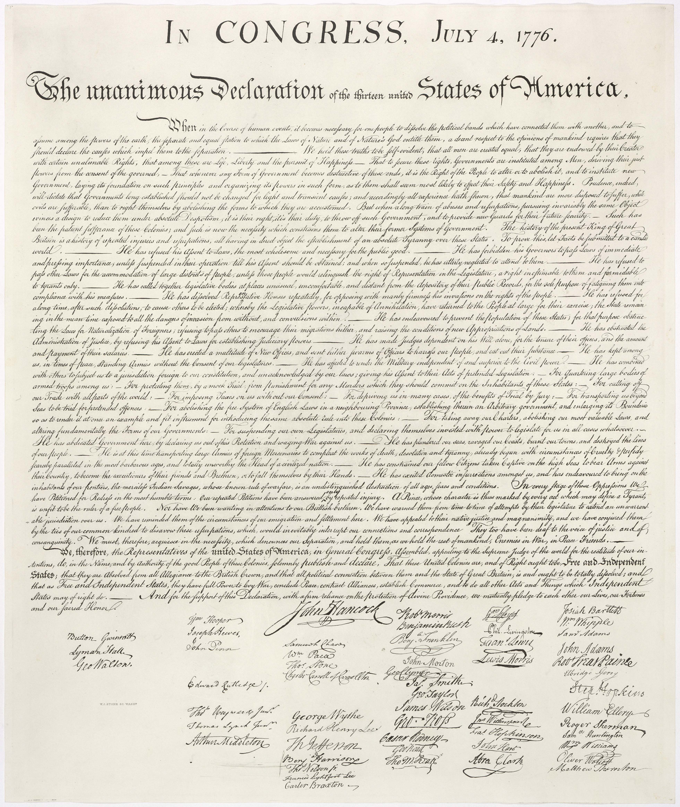

Directions: Read the full text, then answer the questions at the end.
A woman's legal condition in 1848 depended on whether she was married. A single woman could hold property, sign contracts, and sue in court. A married woman lived under coverture, the common law doctrine that covered her legal existence with her husband's. Her property passed under his control, her wages belonged to him, and she could not contract or sue in her own name.
In the language the Seneca Falls Declaration would use, a married woman was, in the eye of the law, civilly dead. The doctrine stood in every state, inherited from English common law, and it held whether a husband used his power kindly or cruelly, because the power was the law's gift and not the man's character.
Women learned to organize inside the antislavery movement. They formed female antislavery societies in the 1830s, circulated petitions signed by thousands, raised money at fairs, and spoke for a cause respectable opinion said was not theirs. The work taught a generation of women how a reform campaign ran, and taught them that the arguments for their own silence sounded like the arguments for slavery.
Sarah and Angelina Grimké of Charleston carried the lesson furthest. Daughters of a slaveholding judge, they left the South, joined the abolitionists, and by 1837 were lecturing to audiences of men and women together, a first for American women on a public platform. When Massachusetts Congregational clergy issued a pastoral letter in 1837 warning women back to their sphere, the sisters answered in print rather than obeying in silence.
In June 1840 the World's Anti-Slavery Convention met in London, and American societies sent women as delegates, Lucretia Mott of Philadelphia among them. The convention voted to refuse the women their seats. The women were placed behind a curtain in the gallery, where they could watch and not speak, while the cause they had crossed an ocean to serve debated without them.
Elizabeth Cady Stanton was there on her honeymoon, the wife of a delegate, and she spent the convention in the gallery beside Mott, a Quaker minister and veteran reformer. The two women talked through the insult and reached a resolution of their own. Some day they would hold a convention to discuss the rights of woman. Eight years passed before the occasion came.
The argument Seneca Falls would make was already in print. In 1837 and 1838 Sarah Grimké published her Letters on the Equality of the Sexes, answering the clergy from the Bible itself. Man and woman, she argued, were created equal, and whatever subjection woman lived under was man's doing and not God's design.
Grimké's method set the pattern. She asked for no favors and surrendered no claim. Her standard was creation, and her conclusion reached past abolition to every law and custom that placed woman under man. A decade later the Declaration of Sentiments would build the same claim on a second foundation, the self-evident truths of 1776, and aim it at statutes and ballot boxes, not pulpits.
Three months before Seneca Falls, the law moved in New York. On April 7, 1848, the state enacted its Married Women's Property Act, the first effective statute of its kind. A married woman could now hold real and personal property in her own name, as if she were a single female, and that property was not liable for her husband's debts.
The act did not fall from the legislature unasked. Women and their allies had petitioned New York since the 1830s, and the constitutional convention of 1846 had debated married women's property without acting. The statute covered property only. It gave no wife her wages, no woman a contract, and no woman a vote. It proved coverture could be changed by law.
In July 1848 Stanton lived in Seneca Falls, Mott was visiting near Waterloo, and the promise of 1840 found its occasion. Five women, Mott, Stanton, Martha Coffin Wright, Mary Ann M'Clintock, and Jane Hunt, settled the plan over tea at the Hunt house in Waterloo on July 9, and a notice in the Seneca County Courier on July 11 announced a convention to discuss the condition and rights of woman.
The convention met on July 19 and 20 in the Wesleyan Chapel, an antislavery meeting place. About three hundred people came, women and men. James Mott chaired the first day, because no woman present had ever presided over a mixed assembly. Stanton read the document she had drafted at the M'Clintock table, modeled sentence by sentence on the Declaration of Independence of 1776.

The Declaration of Sentiments held that all men and women are created equal, and laid a bill of grievances against man as the Declaration of 1776 had laid one against a king. He had never permitted her the elective franchise. He had made her, if married, civilly dead, and taken her property and her wages. He had closed the colleges and the profitable employments against her. Its resolutions demanded immediate admission to all rights of citizens.
One resolution went further and nearly failed. Stanton insisted that the convention demand the elective franchise itself. Mott warned the demand would make the convention ridiculous, and Stanton's own husband opposed it. Frederick Douglass spoke for the resolution on the second day, and it passed by a narrow margin, the only one not carried unanimously. One hundred people, sixty eight women and thirty two men, signed the Declaration.
1. State what coverture did to a married woman. Name the control her husband held over her property and her wages, and give the phrase the Declaration used for her standing in the eye of the law.
2. State how antislavery work trained women to organize. Name three activities the reading lists, and state what the Grimké sisters were doing by 1837 that no American women had done on a public platform.
3. State what the London convention of 1840 did to its women delegates, naming where they were placed, and state the agreement Mott and Stanton reached in the gallery.
4. Compare the two foundations of the argument. State the standard Grimké argued from in her Letters, and state the second foundation the Declaration of Sentiments built the same claim on in 1848.
5. Answer in a short paragraph. The lesson question asks where the women of 1848 got their argument, and what they asked for first. Give the strongest answer the reading supports, using the Married Women's Property Act of April 1848 and the suffrage resolution as evidence.
1. State what coverture did to a married woman. Under coverture a married woman's legal existence was covered by her husband's. Her property passed under his control and her wages belonged to him, and she could not make a binding contract or sue in her own name. The Declaration's phrase for her standing is that she was, in the eye of the law, civilly dead.
2. State how antislavery work trained women, and the Grimké sisters' first. Women formed female antislavery societies in the 1830s, circulated petitions signed by thousands, raised money at fairs, and spoke and wrote for the cause. By 1837 Sarah and Angelina Grimké were lecturing to audiences of men and women together, the first American women to address mixed audiences on a public platform, and they answered the clergy's pastoral letter of 1837 in print.
3. State the London exclusion, and the agreement. The World's Anti-Slavery Convention of June 1840 voted to refuse its women delegates their seats and placed them behind a curtain in the gallery, where they could watch and not speak. In that gallery Elizabeth Cady Stanton and Lucretia Mott agreed that some day they would hold a convention to discuss the rights of woman, the promise Stanton remembered as made in London in 1840 and kept at Seneca Falls in 1848.
4. Compare the two foundations. Grimké argued from scripture. In her Letters on the Equality of the Sexes of 1837 and 1838 she read the creation account to show that man and woman were created equal and that woman's subjection was man's doing, not God's design. The Declaration of Sentiments built the same claim on the self-evident truths of the Declaration of Independence of 1776, that all men and women are created equal and that governments derive their just powers from the consent of the governed, and aimed it at statutes and the franchise.
5. Where did the argument come from, and what was asked first? Full credit answers hold both halves. The argument came from two foundations the women had built before 1848: Grimké's scriptural case that the sexes were created equal, and the founding text Stanton rewrote, with a decade of antislavery organizing as the school that taught the method and London 1840 as the grievance that set the date. What they asked for first was immediate admission to all rights of citizens, proven against coverture by the New York Married Women's Property Act of April 7, 1848, which had already given a wife her property in her own name three months earlier. The demand that went furthest, and the measure of how far the first asks reached, was the elective franchise, which passed by a narrow margin only after Douglass spoke for it. A paragraph that names only the founding text, or only the vote, earns partial credit.